Il negozio come luogo (A), come universo di prodotti (B), come esperienza di scoperta (C) e una sintesi critica (D). Scorri dentro ogni riquadro per vedere la pagina intera; i pulsanti aprono il prototipo navigabile.
Narrazione verticale: dal luogo alle persone, poi i prodotti.
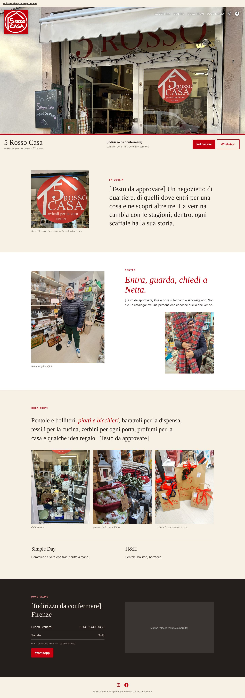
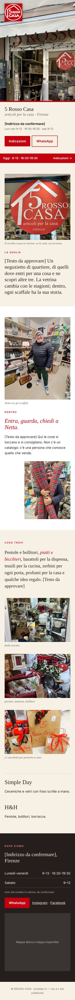
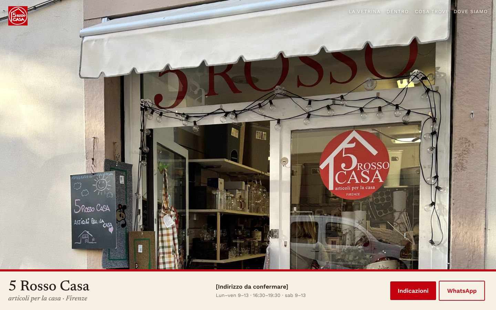
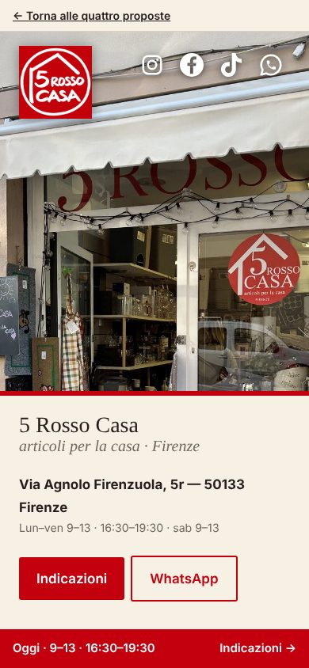
Indice a sei famiglie, moduli fotografici, navigazione per categoria.
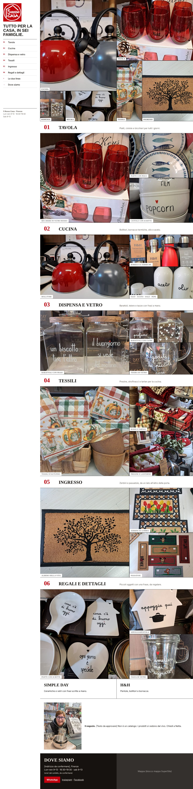
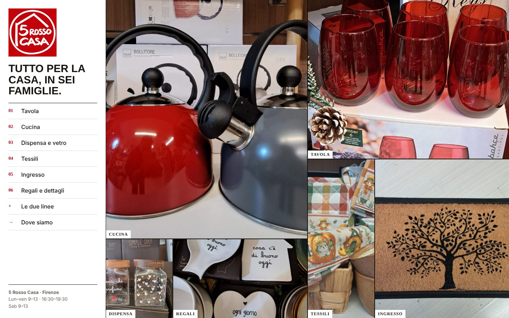
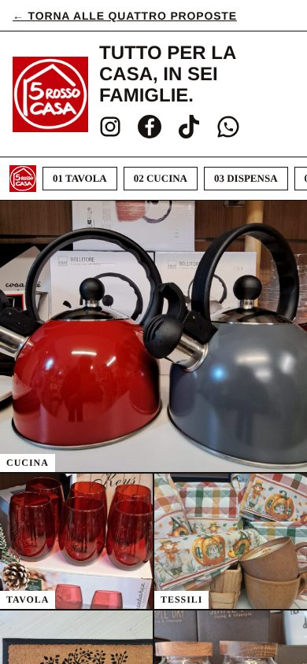
Capitoli a tutto schermo, cambi di scala; il negozio arriva alla fine.
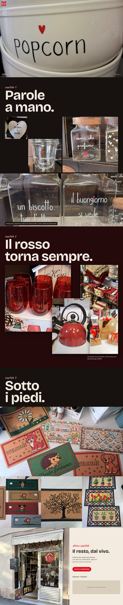
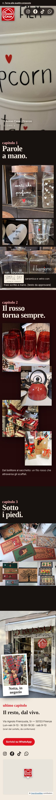
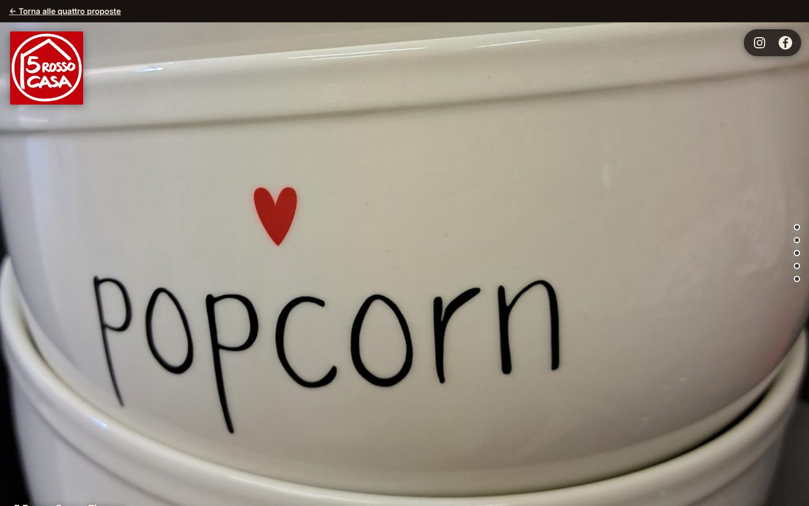
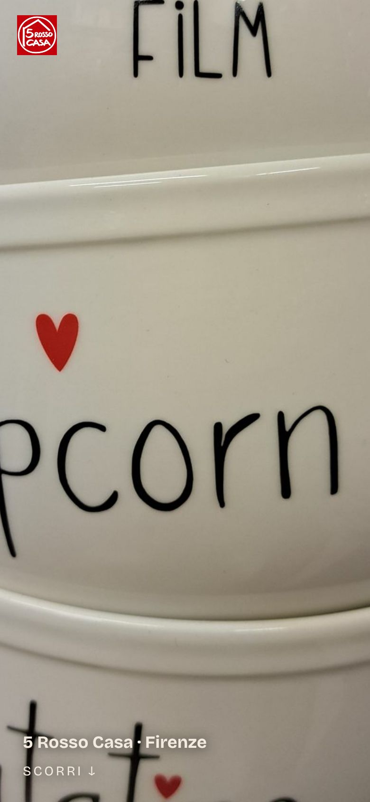
Apertura con negozio e offerta, muro di foto, Netta, informazioni. La più breve.
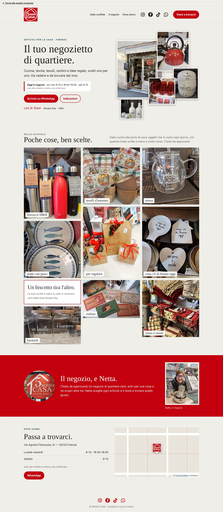
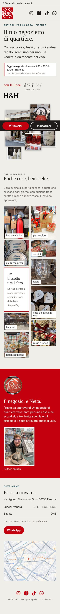
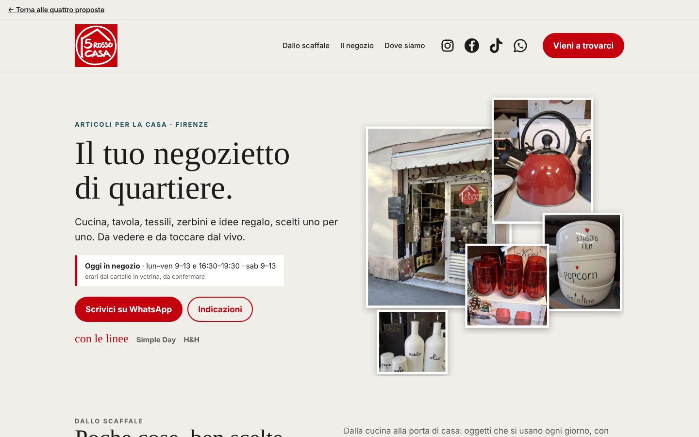
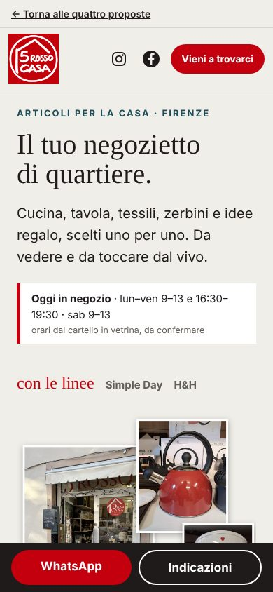
| A · Luogo | B · Universo | C · Scoperta | D · Vetrina | |
|---|---|---|---|---|
| Primo schermo | Facciata a tutta altezza + fascia pratica. | Indice fisso a sinistra + mosaico di sei foto. | Un solo macro-dettaglio, nessun titolo. | Due colonne: promessa + orari + pulsanti a sinistra, collage sovrapposto di facciata e quattro prodotti a destra. Negozio e offerta insieme. |
| Ordine | Facciata → soglia → dentro (Netta) → prodotti → dove siamo. | Mosaico → sei famiglie → due linee → negozio → dove siamo. | Macro → parole a mano → il rosso → zerbini → facciata e info. | Apertura → un solo scaffale a muro di foto (9 + 1 testo) → fascia rossa «il negozio, e Netta» → informazioni. Quattro momenti. |
| Gerarchia | Luogo e persona > info > prodotti. | Categorie > foto > testo. | Immagine > parola > info. | Negozio + offerta > foto in ordine libero > persona > info. |
| Prodotti | In frase, tre foto. | Modulo 1+2 per famiglia. | Fili tematici. | Un solo muro a colonne con didascalie a mano, senza categorie ripetute. |
| Ritmo | Lento, colonna unica. | Regolare e denso. | Irregolare, cambi di scala. | Breve: apertura ariosa, muro denso, una fascia di colore pieno, chiusura pratica. |
| Lunghezza | ≈ 3400 px | ≈ 4800 px | ≈ 5900 px | ≈ 2800 px (la più breve) |
| Navigazione | Menu + barra fissa mobile. | Indice fisso / chip. | Scorrimento + punti. | Menu a 3 voci + «Vieni a trovarci»; barra fissa WhatsApp/Indicazioni su mobile. |
| A | B | C | D | |
|---|---|---|---|---|
| Riproducibile (documentato) | Copertina, blocchi testo + immagine, galleria a colonne, pulsanti, social. | Galleria Classico/Mosaico, vetrina immagini con testo alternativo. | Copertina a tutta larghezza, galleria a colonne. | Titolo, testo e pulsanti; collage di apertura come un’unica immagine già composta; muro foto con galleria Mosaico a colonne; fascia rossa come blocco testo + immagine; social. |
| Richiede adattamenti | Fascia pratica sotto la copertina. | Indice fisso → menu in alto; mosaico regolare. | Collage → colonne; niente scatti. | Collage non più cliccabile per singola foto; didascalie scritte sulle foto → testo alternativo o sotto la foto; tavolozza (rosso su fondo crema) da impostare nel tema; barra mobile → blocco normale. |
| Non verificato nell'editor | Ancore, mappa, WhatsApp, font serif. | Ancore, chip, didascalie. | Altezza a schermo intero, ordine immagini. | Font Young Serif/Figtree (probabile ripiego su font di tema), fondo colorato a tutta larghezza per la fascia rossa, ordine delle immagini nel mosaico, ancore, mappa, link WhatsApp, formati e peso massimo delle immagini. |
| Fattibilità | Alta | Media | Medio-bassa | Medio-alta |
| A | B | C | D | |
|---|---|---|---|---|
| Forza | Identità reale; info subito; semplice da costruire. | Ricchezza dell'offerta con ordine. | La più memorabile; evita l'effetto bazar. | Presenta insieme negozio e offerta nel primo schermo; pagina breve; foto in ordine libero; Netta presente senza protagonismo. |
| Debolezza | Mostra poco l'offerta. | Effetto catalogo; foto riusate. | Info solo in fondo; difficile in SuperSite. | Meno spettacolare di C; poco spazio per le linee H&H (una sola foto); dipende da testi, indirizzo, orari e consenso di Netta. |
| Eredita | — | — | — | Da A: persona e facciata. Da B: chiarezza commerciale (linee nominate, foto etichettate). Da C: libertà di composizione (collage, scale diverse). |